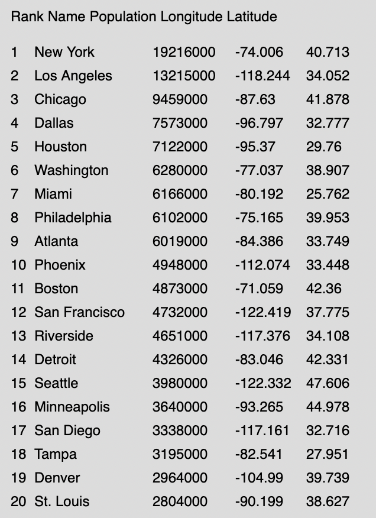

Generating Data for US Cities

Understanding graph algorithms such as the traveling salesperson algorithm requires we create a realistic graph that represents geo-locations. But manually typing the names of cities and their longitude and latitude is a slow and painful process. But generative AI can help us. It is very good at generating realistic-looking synthetic data.
In this example, we will generate a small geospatial dataset we will use in this course for demonstrating graph algorithms. We chose a dataset that we know is referenced frequently on the web: large US cities.
Sample Prompt
Create a table of the top 20 metro areas in the US. Add one row in the table for each metro area. Create the following columns:
1. Name of the largest city in the metro area
2. Population
3. Longitude
4. Latitude
You will note that we didn't really need seven digits of precision, but we can ask ChatGPT to reduce the precision later.
Sample Table Generate by ChatGPT
| Rank | Metropolitan Area | Population | Longitude | Latitude |
|---|---|---|---|---|
| 1 | New York-Newark-Jersey City | 19,216,182 | -74.0060° | 40.7128° |
| 2 | Los Angeles-Long Beach-Anaheim | 13,214,799 | -118.2437° | 34.0522° |
| 3 | Chicago-Naperville-Elgin | 9,458,539 | -87.6298° | 41.8781° |
| 4 | Dallas-Fort Worth-Arlington | 7,573,136 | -96.7970° | 32.7767° |
| 5 | Houston-The Woodlands-Sugar Land | 7,122,240 | -95.3698° | 29.7604° |
| 6 | Washington-Arlington-Alexandria | 6,280,487 | -77.0369° | 38.9072° |
| 7 | Miami-Fort Lauderdale-Pompano Beach | 6,166,488 | -80.1918° | 25.7617° |
| 8 | Philadelphia-Camden-Wilmington | 6,102,434 | -75.1652° | 39.9526° |
| 9 | Atlanta-Sandy Springs-Alpharetta | 6,018,744 | -84.3863° | 33.7490° |
| 10 | Phoenix-Mesa-Chandler | 4,948,203 | -112.0740° | 33.4484° |
| 11 | Boston-Cambridge-Newton | 4,873,019 | -71.0589° | 42.3601° |
| 12 | San Francisco-Oakland-Berkeley | 4,731,803 | -122.4194° | 37.7749° |
| 13 | Riverside-San Bernardino-Ontario | 4,650,631 | -117.3755° | 34.1083° |
| 14 | Detroit-Warren-Dearborn | 4,326,442 | -83.0458° | 42.3314° |
| 15 | Seattle-Tacoma-Bellevue | 3,979,845 | -122.3321° | 47.6062° |
| 16 | Minneapolis-St. Paul-Bloomington | 3,640,043 | -93.2650° | 44.9778° |
| 17 | San Diego-Chula Vista-Carlsbad | 3,338,330 | -117.1611° | 32.7157° |
| 18 | Tampa-St. Petersburg-Clearwater | 3,194,831 | -82.5415° | 27.9506° |
| 19 | Denver-Aurora-Lakewood | 2,963,821 | -104.9903° | 39.7392° |
| 20 | St. Louis | 2,803,707 | -90.1994° | 38.6270° |
We also can ask ChatGPT to reformat this table as a JSON file for download. This is the type of file format we will use in our other demos.
Caution
ChatGPT frequently will add an extra comma to the end of a record set. This will cause a load error. We suggest you view the JSON file in a tool that checks syntax or use a JSON syntax checker.
Run the US Cities Map MicroSim Edit
Example of Reading JSON File
